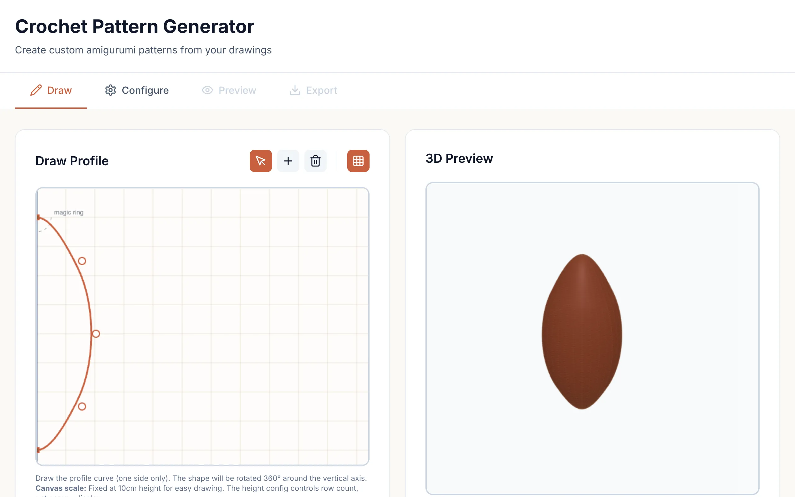
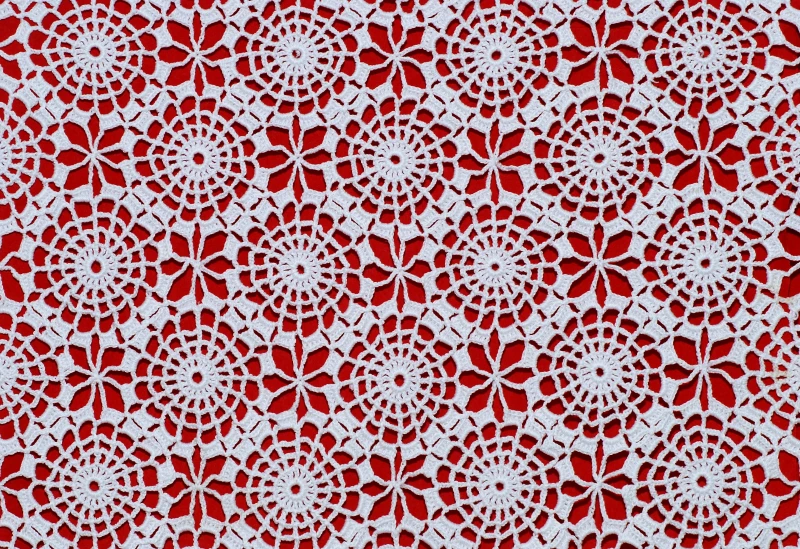
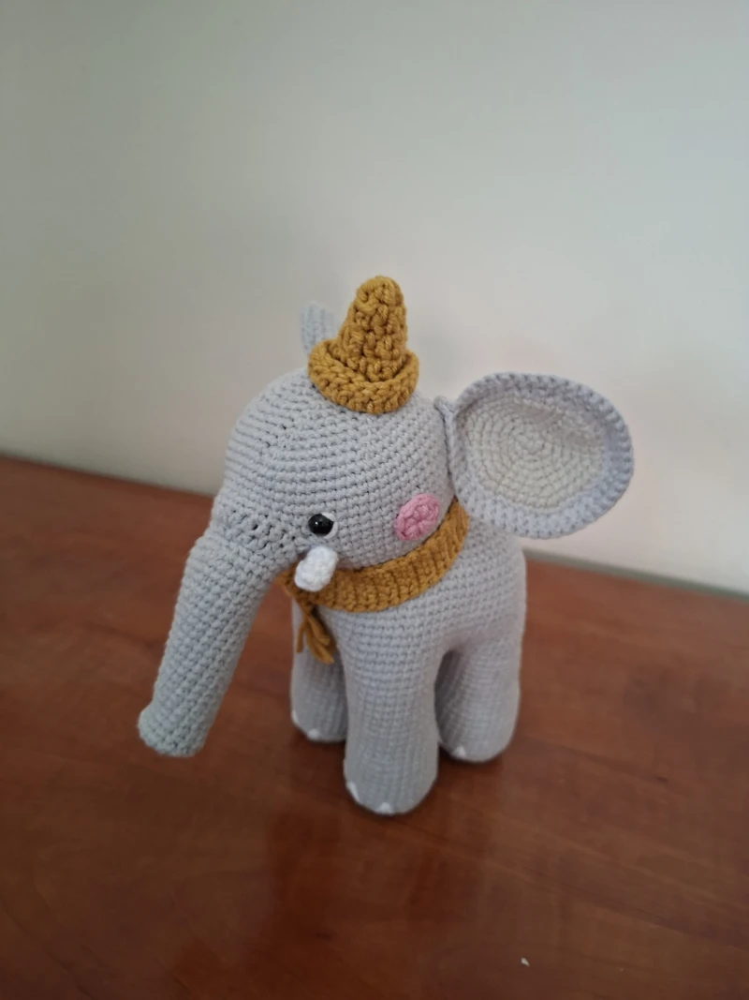

Amigurumi are small stuffed figures made by crocheting in the round. You start with a magic ring at the bottom, increase stitches each row to widen the shape, then decrease back down to close it off. The pattern for any given shape is just a list of stitch counts per row. If you know the profile you want (say, a sphere, or a pear, or a mushroom), the math to get those stitch counts is mechanical. So why not draw the profile and let the computer figure out the pattern?

{kind=link}
That's what this tool does. You draw one side of your desired shape on a canvas. The app treats that drawing as a surface of revolution, rotating it around the vertical axis to produce a 3D solid. Formally, the drawn profile defines a radius function \(r(z)\), where \(z\) is the height. Rotating this curve around the \(z\)-axis sweeps out a surface whose cross-section at height \(z\) is a circle of circumference
\[C(z) = 2\pi\, r(z).\]The tool samples \(r(z)\) at each row height and converts those circumferences into stitch counts, respecting the physical constraints of crochet.
From drawing to stitches
The drawn profile gets smoothed into a B-spline curve so that minor hand tremors don't produce jagged radius changes between rows. Given a set of drawn control points \(\{(r_i, z_i)\}\), the algorithm fits a B-spline of degree \(p\) over a knot vector \(\mathbf{t} = (t_0, t_1, \ldots, t_{m})\). The smoothed radius function is then
\[r(z) = \sum_{i=0}^{n} c_i\, N_{i,p}(z),\]where \(c_i\) are the spline coefficients and \(N_{i,p}(z)\) are the B-spline basis functions defined recursively by the Cox–de Boor formula over the knot vector \(\mathbf{t}\). The knot vector is clamped (its first and last \(p+1\) entries are repeated) so that the curve interpolates the endpoints of the drawing.
{kind=link}
The algorithm samples this curve at fixed height intervals, one per row. At each sample point \(z\), it computes the circumference \(C(z) = 2\pi\, r(z)\) and divides by the stitch gauge \(g\) (configurable based on your yarn and hook size) to get the ideal stitch count for that row:
\[n(z) = \left\lfloor \frac{C(z)}{g} \right\rfloor = \left\lfloor \frac{2\pi\, r(z)}{g} \right\rfloor.\]The tricky part is enforcing crochet constraints. In real life, you can at most double the stitch count from one row to the next (by doing an increase in every stitch), and at most halve it (by doing a decrease in every stitch). Letting \(n_k\) denote the stitch count at row \(k\), the clamping constraint is
\[\lceil n_{k} / 2 \rceil \;\leq\; n_{k+1} \;\leq\; 2 \cdot n_{k}.\]If the ideal stitch count derived from the drawn profile falls outside this band, the algorithm clamps it to the nearest feasible value and the actual shape will deviate slightly from the drawing. This is honest: the pattern won't promise a shape the yarn can't deliver.
Within each row, increases and decreases need to be distributed evenly around the circle to avoid lumps. If row 5 has 12 stitches and row 6 needs 18, that's 6 increases spread across 12 positions. The algorithm spaces them as uniformly as possible so the fabric grows evenly.

{kind=link}
The output
The generated pattern uses standard crochet notation. Each row specifies the stitch type (single crochet, increase, decrease) and the repeat count. The pattern starts with a magic ring of 6 single crochet stitches, because that's the conventional starting point for amigurumi worked in the round. It ends by closing down to somewhere between 6 and 15 stitches, at which point you stuff the figure and sew the opening shut.
A 3D preview shows the rotated shape as you draw, so you can see what the finished amigurumi will look like before generating the pattern. The pattern is exportable as plain text or JSON.
Implementation
The pattern generation runs in Rust compiled to WebAssembly. Three Rust crates handle the pipeline: type definitions, the core algorithm (B-spline interpolation, sampling, constraint enforcement, stitch distribution), and WASM bindings via wasm-pack. The frontend is React with TypeScript, using Canvas for the drawing interface and the 3D preview. WASM computation runs in a Web Worker so the UI stays responsive while the pattern is being generated. Vite handles the dev server and build.